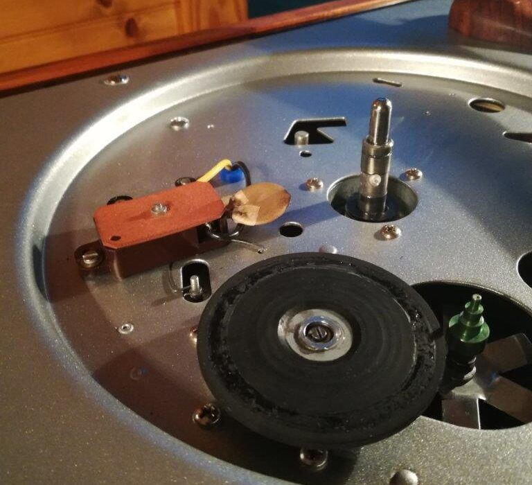

The Magnavox Micromatic, like most record changers, was an “idler drive” record player. What this means is that the motor turns a wheel called an idler, which in turn spins the platter and/or drives the entire changer mechanism. There were idlers which were not changers, primarily the transcription and broadcast turntables which are so highly sought after now, such as the Garrard 301 and the Rek-O-Kuts. Idlers were the primary drive mechanism for turntables in the ’50s, faded away in the ’60s, and all but disappeared in the ’70s.
This is an original Magnavox idler:
The idler effectively does nothing. Well, other than spin the platter. It does not do any work like a motor, or change gearing like a pulley, it merely transfers motion. That’s why it is “idle.” That is also why it doesn’t matter much what size the idler is, because it is the ratio of the motor spindle to the platter that determines speed. Many people find this hard to believe, but if you do the math using an automatic calculator or spreadsheet, you’ll see that changing the idler diameter will not change the platter speed. If you use a smaller idler, it will spin faster, and it will, correspondingly turn the platter less for each turn, which will put it at exactly the same speed.
Unfortunately, idlers were made of rubber (or metal/plastic covered in rubber) and rubber degrades with age. Typically, it hardens and cracks. The nature of an idler makes it possible to sand down the outside of the rubber to reach softer, protected rubber below, however, the amount of rubber on the Micromatic/Collaro idler is slim. There is about 1/8″ of rubber between the metal idler wheel and the platter. If an idler is significantly hardened or cracked, it simply is not going to help. There are some options.
First, I tried to make my own repair. I soaked the hardened cracked rubber in acetone for a few days and was able to scrub off the gooey rubber.
The idler, with rubber, measured 2.5″ across and 0.11″ thick. Pretty close to 0.125″, or 1/8″. I bought a sheet of adhesive neoprene rubber 1/8″ thick (50A seems to be the right hardness), and the plan was to secure the rubber to the steel disc, then, abuse my drill press by chucking it up and turning the rubber down. While the original idler had rubber centered over the metal disc, I reasoned that this would only displace the idler contact surface by less than 1/16″ (well within the height adjustment range), and that since I wasn’t planning to use the lowest step on the motor spindle (78rpm) I wouldn’t bottom out on the deck.
I drilled a hole in the neoprene, and stuck it to the idler, but I realized that the adhesive was not especially strong. The holes in the idler were actually about the perfect size for a #6 screw, so I tapped and cut down some screws to fit. After securing screws, I turned the rubber to 2.5″ and gave it a try.
My makeshift idler worked, but it was noisy and clunky, creating a lot of rumble. I think it was flexing upward. There are two ways I think I could fix this, which is to either create a top plate, sandwiching the rubber in steel, or by using a better adhesive. I have read online that both contact cement and super-glue are often used to bond neoprene rubber to metal. I think I’d go the super-glue route since it has less give.
I decided instead to try a professionally rebuilt idler. There are a few people who offer this service online, including Gary of https://www.thevoiceofmusic.com/. I ordered the correct idler from him, which has fresh, soft rubber bonded to the wheel exactly like the original. Shipping was fast, and customer service terrific. I recommend him for any of your vintage record changer needs.
The rebuilt idler was smooth and quiet. I had the opportunity to try an old, original idler in excellent shape – a friend also has a Magnavox Micromatic – and the original idler may have produced just a tiny bit less rumble to my ear, but it also had 50 years of concentric rolling to massage the rubber into place. I think my rebuilt idler will perform as well as the original when run-in for a while.
I still think my DIY idler rebuild is worth pursuing, but for now, I’m rolling with my replacement from Gary. Thanks!
Tags: idler, Micromatic, Turntable